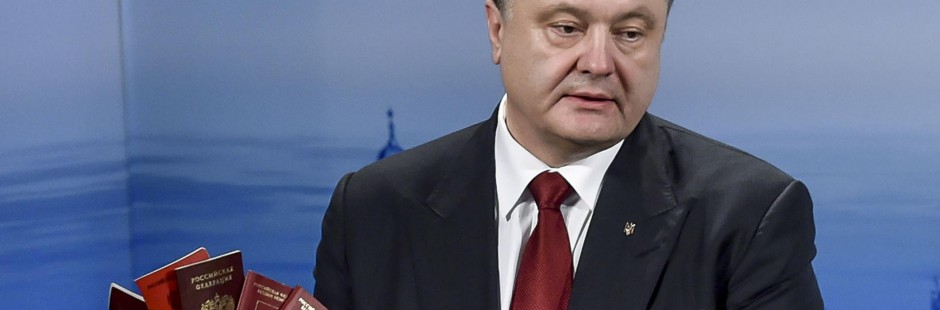

А.Шарий: Под знаком раздраженности
Прошедшая неделя ознаменовалась сразу несколькими печальными событиями, преподнесенными, впрочем, вполне в стиле украинских СМИ едва ли не под видом достижений и побед.
Провальные результаты Саммита, к которым аккуратно готовил украинцев посол Украины при ЕС Константин Елисеев еще 12 мая, перечеркнули надежды на получение безвизового режима и даже призрачное сближение с ЕС.
К слову, чисто диалектически считать результаты Саммита абсолютно катастрофическими нельзя по одной лишь причине — ввиду мизерных ожиданий Киева от Саммита изначально.
При этом все СМИ мира (за исключением, пожалуй, самых объективных и честных – отечественных) безапелляционно признали – охлаждение интереса Евросоюза к самому «восточному партнерству» неоспоримо.
Если отбросить откровенную ахинею, изрекаемую штатными «оптимистами» — «политологами» или рупором нелепостей Ириной Геращенко, основным «успехом» Саммита в сухом остатке остается упоминание в итоговом документе аннексии Крыма и возможности в перспективе вступления в ЕС.
Что ж, давайте посмотрим, что так обрадовало Киев.
«В рамках Европейской политики соседства и Восточного партнерства участники саммита подтверждают суверенное право каждого из партнеров на свободный выбор уровня амбиций и целей, к которым они стремятся в своих отношениях с Европейским союзом. Именно ЕС и его суверенные партнеры должны принимать решение о том, как они хотят действовать в своих отношениях»
Без сомнения, речь идет о невозможности вмешательства третьих стран (конечно же, России) во взаимоотношения между ЕС и его партнерами по «Восточному партнерству».
При этом совершенно четко дано понять – Украина имеет право выбора «уровня амбиций» в своем стремлении стать частью Евросоюза. Можете флаги вывешивать рядом с государственными, можете номерные знаки авто выпускать с гербом ЕС.
Дело ваше, уровень амбиций определяется самостоятельно. При этом решения остаются за ЕС и что это за решения в свете прекращения расширения ЕС на Восток – вполне очевидно.
«ЕС остается привержен своей поддержке территориальной целостности, независимости и суверенитета всех своих партнеров».
Вот это обрадовало? А радующиеся политические деятели и чиновники МИД не в курсе, что поддержка территориальной целостности и суверенитета является «общим местом» любой декларации такого плана? Или знают, но намеренно «играют в дурачков»?
Агрессивно в дурачка играл 20 мая глава СНБО Александр Турчинов. Чем вызвал шквал раздражения.
«Для защиты от ядерной угрозы со стороны государства-агрессора Российской Федерации Украина, возможно, будет вынуждена начать работу в направлении создания системы противоракетной обороны. Не исключаю, что для защиты от ядерной опасности мы вынуждены будем проводить консультации относительно размещения компонентов системы ПРО на территории Украины»
Кремль, получивший в руки такой подарок, моментально отреагировал устами главы международного комитета Совета Федерации Косачева:
«Турчинов, видимо не понимая, что выдает «военную тайну», а на самом деле секрет Полишинеля, признал то, что официально отрицают его американские кураторы: система ПРО в Европе создавалась и развивается не под реальные и мифические угрозы из региона Ближнего и Среднего Востока, а для того, чтобы попытаться компенсировать российский ядерный потенциал…
Но перестарался – для американцев это медвежья услуга, они и так не знают, что делать с заявкой Украины на членство в НАТО, равно как и с бесконечными просьбами украинцев про деньги и оружие».
Косачев как в воду глядел – за болтовню Турчинова отдуваться пришлось Госдепу.
В частности, представитель Госдепартамента Мари Харф заявила:
«У США и НАТО нет планов размещать системы ПРО на Украине. Я не понимаю, что они [украинская сторона] имели в виду. Хорошо известно, что все существующие, а также планируемые для размещения элементы системы ПРО находятся и могут находиться только на территории стран Альянса»
Неудобно получилось. Реакция НАТО была еще более раздраженной:
«За любыми комментариями по этому вопросу обращайтесь к украинской стороне»
На прошлой неделе раздраженность нашим государством и его менеджментом демонстрировали представители всех организаций, именуемых многозначительно «партнерами Украины».
Джон Хербст, опытный дипломат, экс-посол США в Украине, дал интервью, в котором намеки на президента и премьера Украины не прочел только тот, кто не умеет читать:
«В Украине очень серьезные проблемы с коррупцией, потому что, откровенно говоря, верхушка вашей элиты очень коррумпирована. Самая высокая верхушка. Я не буду сейчас называть их имена, но в списке коррупционеров есть даже те лица, которые очень хорошо умеют говорить «языком реформ» со странами Запада, метко говорить, преуспевая при старой системе.
Им прекрасно удается переходить с одной партии в другую, порой совершать маневры между несколькими партиями — и так или иначе оставаться неприкосновенными и процветать. Они научились процветать, играя по старым, но очень удобными для себя правилам. И если вам удобно работать в должности министра, представьте себе, какие будут «удобства на более высоком уровне. Эти люди и является проблемой, и одновременно — руководством вашей страны»
Если бы Петр Алексеевич желал вызвать еще большее раздражение у Запада, у него не получилось бы сделать это лучше, чем он сделал в своем интервью для ВВС от 20 мая:
«Могу сказать, что Великобритания — это одна из стран ЕС, которая больше всего поддерживает европейские стремления Украины и работает для прекращения агрессии».
Без сомнения, ввиду того, что ВВС – британская компания, Петр Алексеевич сделал реверанс в сторону Великобритании. Давал бы интервью Польше – раскланялся бы ей, а если бы беседовал с представителями Al Jazeera, то однозначно заявил бы о том, что поддержка Украины Катаром является цементирующим основанием самой украинской государственности.
Поддержка Британии действительно имеет место, однако она весьма и весьма формальна.
«…мы захватили двух российских военных, несколько недель и месяцев назад мы захватили сначала 20, потом 60 российских спецназовцев. Я прочитал позавчера в одной газете, что выражение «российские солдаты» пишут в кавычках.
Приезжайте в Киев и проверьте сами — нет причины писать это в кавычках. Это реальные офицеры российского спецназа, которые приехали сюда воевать. Эти два русских солдата убили одного из моих солдат…
Какие еще доказательства мы должны предоставить миру? Хотя мир нам и так доверяет. Какие еще доказательства мы должны предоставить России, что это их солдаты, их регулярные силы и их война и агрессия?»
По всей вероятности, Порошенко на самом деле верит в то, что мир волнует то, о чем он говорит. Приезжайте, посмотрите, мир доверяет. Миру все равно – есть доказательства, или их нет. Хоть с кусками автобуса приезжай, хоть с головами сотрудников ГРУ. Плевать.
«К нам приехали люди, которые тренируют нашу Национальную гвардию и Вооруженные силы. Мы получаем бронетехнику, но без летального оружия».
«…мы хотим такого уровня сотрудничества, чтобы не только защитить свою страну сейчас, но и построить здесь проевропейскую армию. Чтобы защищать не только наш суверенитет, не только свою независимость и территорию, но и свободу, демократию и европейские ценности, за которые мы сейчас воюем».
Он уже не просит, просьбы, безмерно раздражавшие Запад, Порошенко теперь оборачивает в нелепые фантики готовности защищать, не щадя живота, европейские ценности.
Да что там – саму Европу. НАТО защитить не в силах, потому Порошенко возьмет на себя эту миссию. Так и быть. И опять-таки, тяжело осознавать, что о взятии на себя полномочий по «защите Запада» Петра Алексеевича никто не просил.
«Мы считаем, что жизненно необходимо осуществлять хорошую координацию между Украиной и всем миром. Мы нуждаемся в двух вещах – в единстве ЕС, трансатлантического сообщества и всего мира и в солидарности их с Украиной. Ведь это борьба не только за Украину, но и за свободу и глобальную безопасность».
Еще раз – мы сдерживаем мировой апокалипсис, это глобальный конфликт, это мировая война…
Торг между США и Россией по Украине, являющийся очевидным не только для политиков, но и для европейской прессы, Порошенко комментирует в стиле школьника, уговаривающего учителя в том, что он лучше знает – правильна ли задача в учебнике:
«Так может кому-то показаться. Если вы спросите, доверяю ли я президенту Обаме, вице-президенту Байдену, государственному секретарю Керри, то мой ответ будет «да»….
Я получил всё, чтобы считать США абсолютно надежным партнером Украины. Я доверяю им, и у меня нет никаких подозрений, что Украина станет разменной монетой в отношениях России и США».
Без сомнения, ничего кроме усмешки не может вызвать рассказ Порошенко о попытке продажи своего бизнеса в России:
«Но когда я пытался продать, например, мои активы в России, они были немедленно арестованы российским правительством, чтобы не дать мне такой возможности, ведь нельзя продать то, что находится под арестом. И моя собственность в России была конфискована. Они пытались использовать это как метод оказания давления».
Ну и завершающим мазком стала просьба к журналистом ВВС «не слушать российскую пропаганду». Или Порошенко спутал британских журналистов с жителями Донбасса (которые не любят его исключительно из-за пропаганды РФ), или просто заговорился:
«Прежде всего, я хотел бы сказать, что руководитель милиции Киевской области — не неонацист. Он герой, герой войны, без всякого идеологического основания. Если бы я имел доказательства, хоть это не моя компетенция, я бы немедленно отреагировал, если бы кто-то в милиции демонстрировал нечто вроде этого».
Порошенко не видел фото с зигующими «сотрудниками МВД», празднующими назначение того самого «героя войны». Фото, которое видела вся Европа. Он идет дальше, заигравшись в свои советы, которых никто не спрашивает:
«Но — и это самое важное — не слушайте российскую пропаганду. Мы живем в стране, где существует свобода прессы, и для меня очень важно быть открытым, не иметь цензуры во время войны».
Без сомнения, и сами ВВС, не раз аккуратно, но настойчиво указывавшие на неонацизм в Украине , и их коллеги из того же Тelegraph или Guardian ориентируются исключительно по сообщениям российской прессы.
Не скажу, что меня, как украинца, радует неприкрытая раздраженность Запада украинскими проблемами, но все же ощущается определенная грустная удовлетворенность таким поворотом, который был очевиден для любого думающего.
И извечное «я ведь предупреждал» заглушается лишь печальными размышлениями по поводу будущего, которое становится для отечественной государственности в целом все туманнее.
Анатолий Шарий